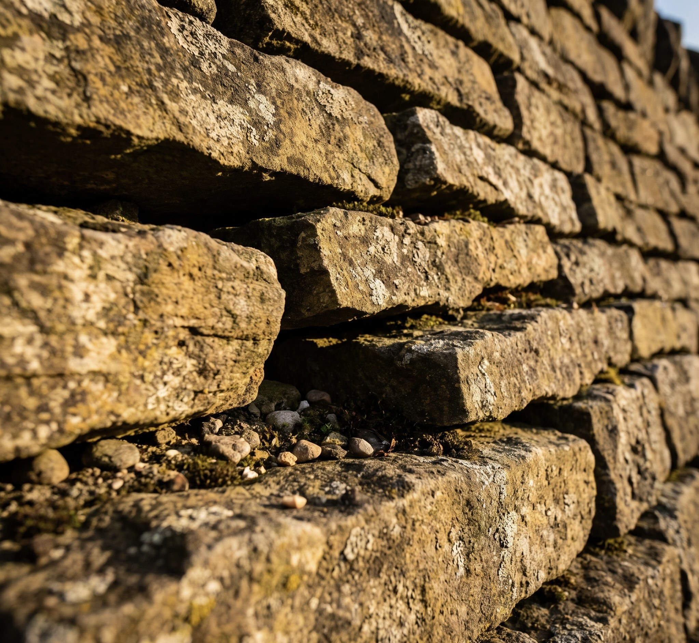
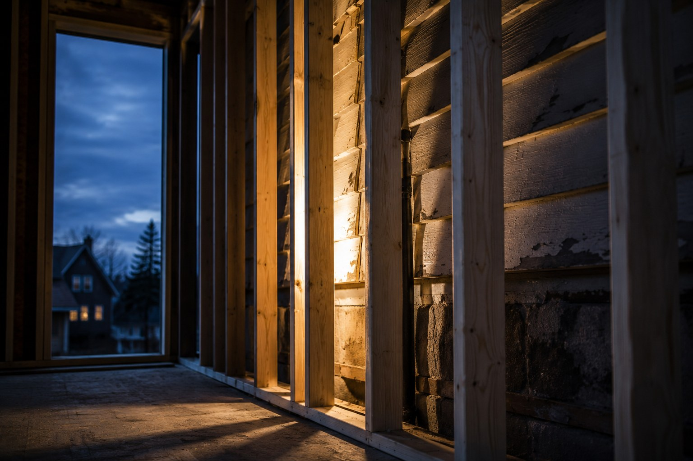

Massachusetts
Every job starts the same way.
Quality stone. Lasting improvements.
Built for the whole home.
Scroll
Massachusetts
Quality stone. Lasting improvements.
Built for the whole home.
Walls / Patios / Steps
Walkways / Driveways / Patios
Repairs / Finishes / Upgrades
Residential / Commercial

About PHAÖRA
PHAÖRA is a Massachusetts home improvement contractor. Masonry and stonework are our flagship, and we handle the whole home from there — inside and out, with our own crews. The people who quote the job are the people who set the stone.
Learn More

